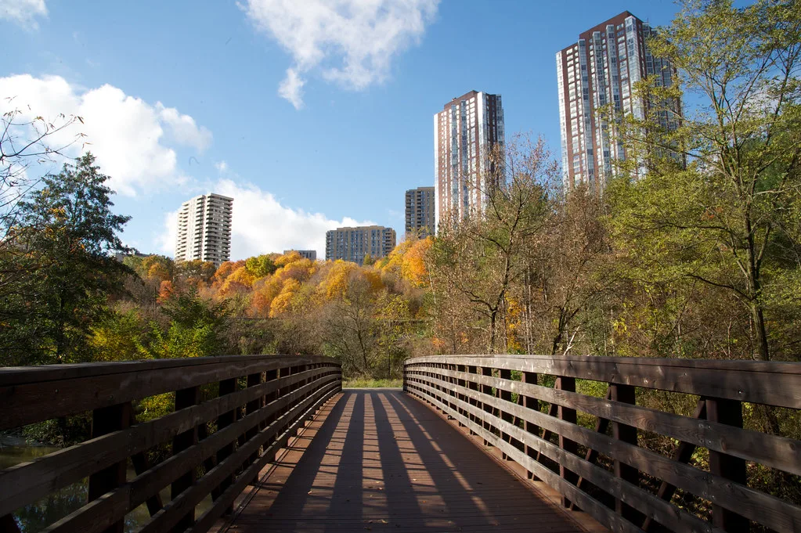

서울 아파트 시장에 매물이 큰 폭으로 쌓이고 있다. 정부가 지난 8월 3일 세제 개편안을 발표한 이후 석 달 만에 서울 아파트 매물은 8만여 건을 넘어서며 올해 최대치를 기록했다. 이는 세제 개편 발표 직전보다 약 33% 늘어난 수준으로, 집을 팔려는 사람은 늘었지만 매수자들은 관망세로 돌아서면서 시장에 나온 물건이 쉽게 소화되지 못하고 쌓이는 모습이다.
매물 증가는 서울 25개 자치구 전역에서 공통적으로 나타났다. 다만 지역별로 비중은 차이가 있는데, 강남·서초·송파 등 강남3구가 전체 증가분의 38.0%를 차지했고, 나머지 22개 자치구에서 62.0%가 발생한 것으로 집계됐다. 세제 개편 이후 집을 내놓는 흐름이 고가 주택 밀집 지역뿐 아니라 서울 전역으로 넓게 확산됐다는 의미다.
매물은 전역에서 늘었지만 가격 흐름은 지역별로 뚜렷하게 갈리고 있다. 한국부동산원이 11월 둘째 주 기준으로 조사한 결과를 보면 강남구(-0.39%), 서초구(-0.37%), 송파구(-0.17%) 등 강남3구 아파트값은 하락했다. 반면 서울 전체 아파트값은 0.07% 올랐고, 강남3구를 제외한 22개 자치구는 모두 상승세를 유지했다. 매물이 가장 많이 쏠린 지역에서만 가격이 눌리고, 나머지 지역은 오히려 오르는 엇갈린 그림이 나타난 셈이다.
매물은 쌓이는데 실제 거래는 오히려 위축되는 모습도 뚜렷하다. 지난 9월 서울 아파트 매매거래량은 신고일 기준 3915건으로, 1년 전 같은 달(6796건)보다 42.4% 줄었다. 대출 규제와 가격에 대한 매도자·매수자 간 눈높이 차이로 거래가 쉽게 성사되지 않으면서, 매물만 쌓이는 '거래 절벽' 현상이 심화되고 있다는 분석이다.

이런 가운데 가계대출은 오히려 다시 증가세로 돌아섰다. 5대 은행의 10월 말 가계대출 잔액은 783조6057억원으로 9월 말보다 2조7717억원 늘었다. 집값 상승 기대감이 여전히 이어지면서 주택담보대출 수요가 지속된 데다, 신용대출도 증가세로 전환한 영향이 겹친 결과다.
전문가들은 세제 개편의 본래 목적이 매물을 늘려 집값을 안정시키는 것이었지만, 실제로는 매물 증가와 가격 상승, 거래 위축이 동시에 나타나는 복잡한 양상이 펼쳐지고 있다고 지적한다. 강남3구를 제외한 대부분 지역에서 가격이 오히려 오르고 가계대출도 재차 늘어나는 엇갈린 신호가 함께 나타나면서, 정책 효과가 실제로 나타날지는 아직 단정하기 어렵다는 관측이 많다.
거래 절벽이 이어지는 가운데 매물 적체가 장기화할 경우 시장에 미칠 영향을 좀 더 지켜봐야 한다는 신중론도 나온다. 매수자들이 추가적인 가격 하락이나 정책 변화를 기다리며 관망세를 이어갈지, 아니면 쌓인 매물이 빠르게 소화되며 거래가 되살아날지에 따라 향후 집값 흐름의 방향이 갈릴 것으로 보인다. 일부 시장 관계자들 사이에서는 지금의 매물 급증세가 과거 집값 조정기 초입에 매물이 쏠렸던 시기와 비슷한 흐름이라는 평가도 나온다. 다만 그때와 달리 이번에는 강남3구를 제외한 대부분 지역 집값이 오히려 오름세를 유지하고 있어, 단순히 과거 패턴을 그대로 대입하기는 어렵다는 반론도 만만치 않다. 결국 겨울철 비수기를 지나며 쌓인 매물이 실제 거래로 이어지는지가 향후 시장 방향을 가늠하는 분수령이 될 전망이다.